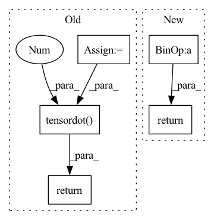

Pattern ID :34733

Before Change
bivector) with basis (1, e12, e13, e23).
swizzle = tf.constant([
[0, 0, 0, -1],
[0, 0, 1, 0],
[0, -1, 0, 0],
[1, 0, 0, 0]
], dtype=b.dtype)
return tf.tensordot(b, swizzle, 1)
def vecvec(a, b):
vector*vector -> scalar + bivector
After Change
bivector) with basis (1, e12, e13, e23).
return b[..., ::-1]*(1, -1, 1, -1)
def trivec_dual(t):
vector + trivector -> scalar + bivector
In pattern: SUPERPATTERN
Frequency: 3
Non-data size: 5
Instances
Fragment ID: 99751690
Project Name: klarh/geometric_algebra_attention
Commit Name: 2a13a2787728455bb625afb8d28e7a467679de21
Time: 2023-04-18
Author: mspells@vectorinstitute.ai
File Name: geometric_algebra_attention/tensorflow/geometric_algebra.py
M Class Name: AnonimousClass
N Class Name: AnonimousClass
M Method Name: bivec_dual(1)
N Method Name: bivec_dual(1)
M Parent Class:
N Parent Class:
M File Name: geometric_algebra_attention/tensorflow/geometric_algebra.py
N File Name: geometric_algebra_attention/tensorflow/geometric_algebra.py
M Start Line: 22
M End Line: 28
N Start Line: 22
N End Line: 22
'>
Before Change
bivector) with basis (1, e12, e13, e23).
swizzle = _bivec_dual_swizzle(b.dtype, b.device).detach()
return pt.tensordot(b, swizzle, 1)
@functools.lru_cache
def _vecvec_swizzle(dtype, device):
// 0 1 2
After Change
bivector) with basis (1, e12, e13, e23).
return pt.flip(b, [-1])*_bivec_dual_mult(b.dtype, b.device).detach()
@functools.lru_cache
def _trivec_dual_mult(dtype, device):
'>
Fragment ID: 99751691
Project Name: klarh/geometric_algebra_attention
Commit Name: 2a13a2787728455bb625afb8d28e7a467679de21
Time: 2023-04-18
Author: mspells@vectorinstitute.ai
File Name: geometric_algebra_attention/pytorch/geometric_algebra.py
M Class Name: AnonimousClass
N Class Name: AnonimousClass
M Method Name: bivec_dual(1)
N Method Name: bivec_dual(1)
M Parent Class:
N Parent Class:
M File Name: geometric_algebra_attention/pytorch/geometric_algebra.py
N File Name: geometric_algebra_attention/pytorch/geometric_algebra.py
M Start Line: 38
M End Line: 39
N Start Line: 33
N End Line: 33
'>
Before Change
bivector) with basis (1, e12, e13, e23).
swizzle = jnp.array([
[0, 0, 0, -1],
[0, 0, 1, 0],
[0, -1, 0, 0],
[1, 0, 0, 0]
], dtype=b.dtype)
return jnp.tensordot(b, swizzle, 1)
def vecvec(a, b):
vector*vector -> scalar + bivector
After Change
bivector) with basis (1, e12, e13, e23).
return b[..., ::-1]*jnp.asarray((1, -1, 1, -1), dtype=b.dtype)
def trivec_dual(t):
vector + trivector -> scalar + bivector
'>
Fragment ID: 99751689
Project Name: klarh/geometric_algebra_attention
Commit Name: 2a13a2787728455bb625afb8d28e7a467679de21
Time: 2023-04-18
Author: mspells@vectorinstitute.ai
File Name: geometric_algebra_attention/jax/geometric_algebra.py
M Class Name: AnonimousClass
N Class Name: AnonimousClass
M Method Name: bivec_dual(1)
N Method Name: bivec_dual(1)
M Parent Class:
N Parent Class:
M File Name: geometric_algebra_attention/jax/geometric_algebra.py
N File Name: geometric_algebra_attention/jax/geometric_algebra.py
M Start Line: 25
M End Line: 31
N Start Line: 25
N End Line: 25